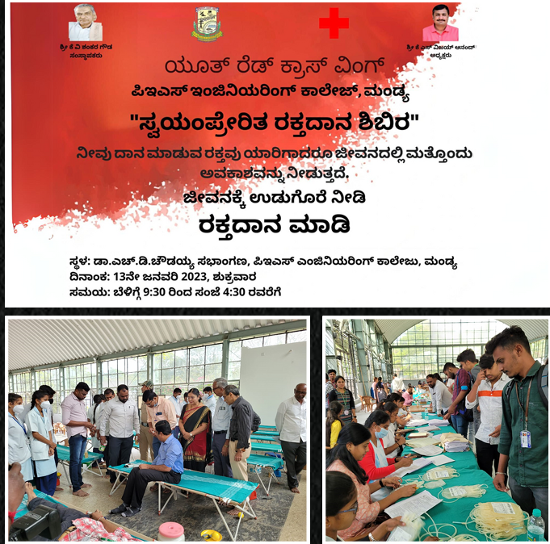

Blood Donation Camp
The "Blood Donation Camp" held at P.E.S College of Engineering, Mandya, on 13th January 2023, under the joint efforts of ISTE and YRCW, exemplified the importance of blood donation as a life-sustaining and life-saving procedure in global healthcare. The event aimed to raise awareness about the significance of blood donation and its immense benefits, reflecting the ongoing commitment of the college to this noble cause.
Event Details
The program commenced at 9:30 a.m. with the gracious inauguration by Dr. H N Gopalakrishna, representing Dr. R M Mahalinge Gowda and the dedicated medical staff. With meticulous preparation, emphasizing the need for donors to be well-rested, adequately nourished, and hydrated, the event proceeded smoothly.
Donation Process
The donation process involved a comprehensive screening process, where potential donors underwent vital sign assessments, including blood pressure, pulse, temperature, and hemoglobin level checks. Among the 450 eager volunteers assembled at the venue, 371 individuals passed the screening and were deemed eligible to contribute their life-saving blood to those in need.
Volunteer Support
The active participation of around 30 volunteers ensured that the donors were well taken care of throughout the process. As a gesture of appreciation, certificates were presented to the donors, courtesy of MIMS, Mandya. Additionally, the volunteers provided fruits and energy drinks, fostering a supportive and caring environment.
Conclusion
Embracing the belief that every small effort can offer others a second chance at life, the organizers expressed their joy in facilitating such crucial initiatives. The overall execution of the program was seamless, showcasing the collective success of the event and underscoring the positive impact of the blood donation camp on the community.